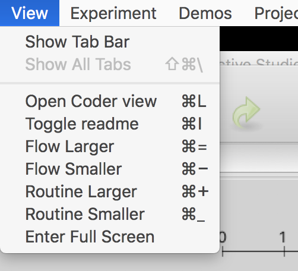
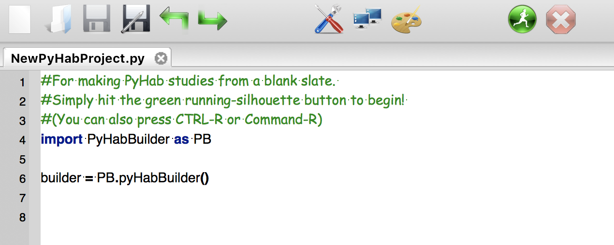

Quickstart guide¶
ManyBabies 4 setup¶
If you are helping out with the ManyBabies 4 project, there is a video guide to setting up the PyHab version of the ManyBabies 4 experiment, as well as a ManyBabies 4-specific text setup guide.
Creating a new PyHab project from scratch¶
Open PsychoPy
- Go to “View” and select “Coder View”. (You can also hit cmd-L on Mac or ctrl-L on Windows.)
- 
- Go to File > Open and find the PyHab folder. Select “NewPyHabProject.py”
- 
This should open a short text script in the coder window. Hit the big green “Run” button.
Construct your study and save it.
In the PsychoPy coder, choose “Open”, then find the experiment folder you saved. Open the file “[projectname]Launcher.py”
Hit the big green run button to open the builder.
Read the manual (https://github.com/jfkominsky/PyHab/raw/master/PyHab%20User%20Manual.pdf) for more information on how to build an experiment.
Running the demo or a pre-made PyHab experiment¶
In coder view, open the experiment’s launcher script. For the demo experiment, in the PyHab folder open “PyHabDemoLauncher.py” in the “PyHabDemo” folder.
- Hit the green “Run” button, and you should see a window like this.

If you want to modify anything about the experiment, click the first drop-down menu and select “Builder”, and then click OK. If you want to run the experiment, select whether or not you want it to present stimuli with the second drop-down list, and then hit OK.
- The next window that appears will be the subject information window.

4a. The first two lines are the subject number and identifier. These are arbitrary, but you need to put something in at least one of them.
4b. The subject sex is entirely optional and can be left blank.
4c. The next three lines are the subject date of birth. These MUST be filled out. Each field takes ONLY two digits. So, for a date of birth of November 12, 2018, you would put 11 in the first box, 12 in the second, and 18 in the third.
4d. The final line is a condition drop-down menu with a list of conditions. If the experiment you are running does not have conditions configured, this will be an arbitrary text box. Otherwise, select the appopriate condition.
- Hit OK, and the experiment will launch. You will be presented with the experimenter window. Press “A” to start the first trial and play the attention-getter. Hold “B” whenever the infant is looking at the screen and release it when they are not. Press Y at any time to end the experiment.
5a. For preferential looking studies, hold “B” when they are looking left and “M” when they are looking right.
The experiment will notify you when it is saving data and then prompt you to press “return” to close the stimuli and experimenter windows and return to the launcher menu.